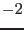

This subroutine gives the probability
of exceeding
 for a given number of degrees of freedom
for a given number of degrees of freedom  , i.e.,
the single-sided integrated probability, where is
the
, i.e.,
the single-sided integrated probability, where is
the  probability distribution function (e.g., see
Appendix C.4 in Bevington & Robinson (1992, ``Data reduction and
error analysis for the physical sciences'', 2nd edition)).
probability distribution function (e.g., see
Appendix C.4 in Bevington & Robinson (1992, ``Data reduction and
error analysis for the physical sciences'', 2nd edition)).
subroutine integratedChi2Prob(chi2, degFree, probability, status)
real(single), intent(in) :: chi2
integer, intent(in) :: degFree ! or real(single)
real(single), intent(out) :: probability
integer, intent(out), optional :: status
end subroutine integratedChi2Prob
The optional argument status is returned as follows;
| Status | Description |
| (status in incompleteGammaQ; see math_utils, Section 19) | |
| 0 | Normal end |
| -1 | When the given chi2 |
| -2 | When the given degFree |
| ((status in incompleteGammaQ) ; see math_utils, Section 19) |